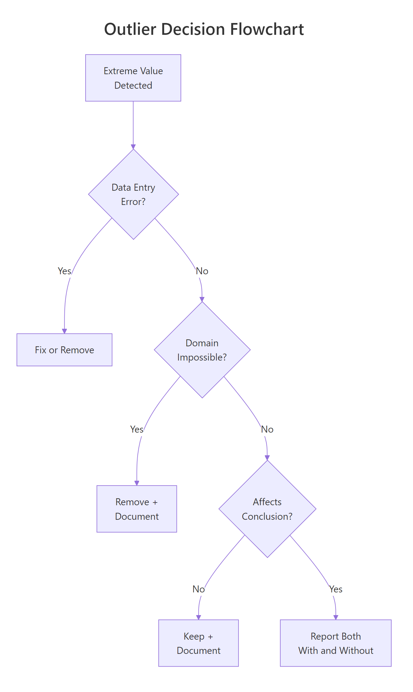
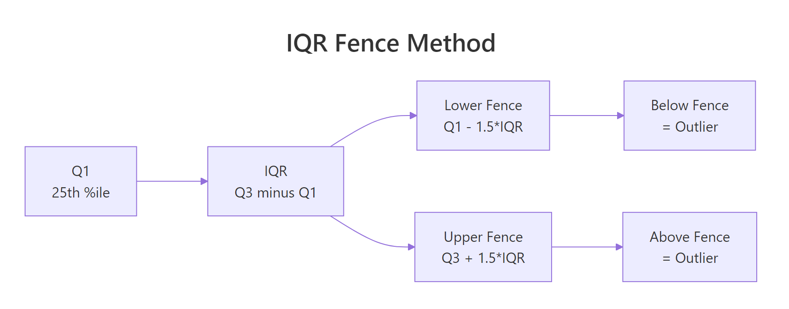
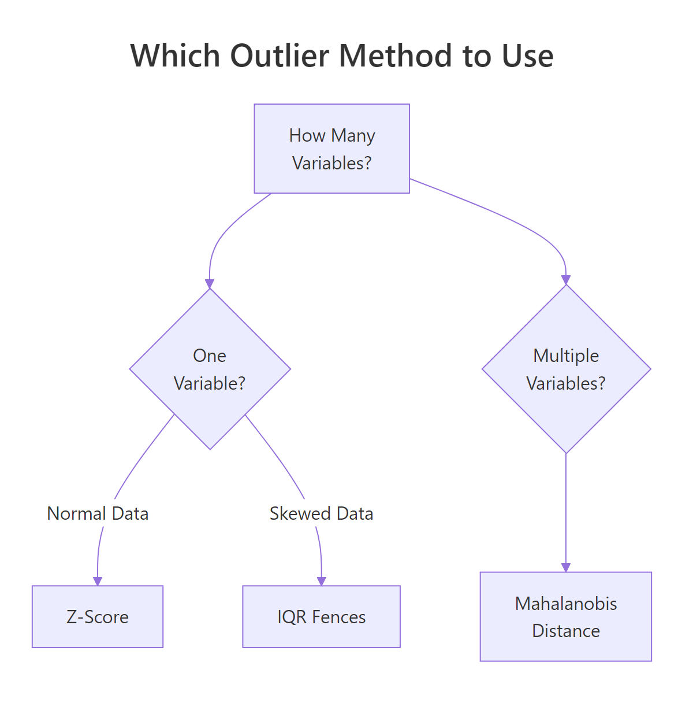

Outlier Detection in R: Four Methods and the One Question You Must Ask First
An outlier is a data point that falls far outside the expected range of values. Whether you remove it depends on whether it is erroneous, extreme, or genuinely interesting, and R gives you four methods to find it: boxplots, IQR fences, Z-scores, and Mahalanobis distance.
A single outlier can double your regression slope or halve your p-value. Before you touch it, you need to answer one question: is this value wrong, extreme, or interesting? The answer changes everything about what you do next.
Introduction
Outliers appear in almost every real dataset. A sensor spikes, a respondent types 999 instead of 9, or one patient genuinely recovers three times faster than everyone else. Each of these is an outlier, but each demands a different response.
The mistake most analysts make is jumping straight to removal. They run a boxplot, see dots outside the whiskers, and delete them. That is backwards. Detection comes first, then diagnosis, then a documented decision. This tutorial teaches all three steps.

Figure 1: Decision flowchart, should you remove, keep, or report both?
You will learn four detection methods, from the simplest visual check to multivariate Mahalanobis distance. Every code block runs in your browser. Click Run on the first block, then work top to bottom, variables carry over between blocks like a notebook.
We use base R throughout. No external packages are needed for any of the four core methods.
What is an outlier, and why does it matter?
An outlier is a data point that sits unusually far from the bulk of the data. "Unusually far" is the part that needs a definition, and different methods draw that line differently.
Why does it matter? Because outliers pull statistical summaries toward themselves. The mean is especially vulnerable. The median is not. Let's see this in action.
The mean jumps to 99, higher than 8 of the 9 students, because the single value of 210 drags it up. The median stays at 88, unbothered. This is why outlier detection matters: if you compute a mean without checking, that one suspicious score misrepresents the entire class.
Outliers fall into three categories, and each demands a different response:
| Type | Example | What to do |
|---|---|---|
| Error | Typo: 210 instead of 21 | Fix or remove |
| Extreme but real | CEO salary in a company dataset | Keep, but consider robust methods |
| Interesting | Patient with unusually fast recovery | Investigate, this may be the finding |
Try it: Create a vector called ex_temps with values 20, 22, 21, 23, 22, 100. Compute the mean and median. Which one better represents the typical value?
Click to reveal solution
Explanation: The mean (34.7) is higher than five of the six values. The median (22) sits right in the middle of the non-outlier values. For skewed or outlier-contaminated data, the median is a more honest summary.
How do you spot outliers visually with boxplots?
A boxplot is the fastest way to see outliers. The box shows the middle 50% of data (from Q1 to Q3), and the whiskers extend to the most extreme point within 1.5 times the IQR. Anything beyond the whiskers appears as a dot, those dots are your candidate outliers.
Let's use the built-in airquality dataset. The Ozone column has real outliers from New York air monitoring in 1973.
The dots above the upper whisker are observations with unusually high ozone concentrations. But a boxplot only shows you that outliers exist, it does not tell you their values. For that, use boxplot.stats().
The $out element returns the actual outlier values. Here, three ozone readings exceeded the upper fence: 115, 135, and 168 ppb. These are not automatically wrong, ozone can spike during heat waves, but they deserve investigation.

Figure 2: IQR fence method, values beyond Q1 - 1.5IQR or Q3 + 1.5IQR are flagged.
Try it: Make a boxplot of airquality$Wind and use boxplot.stats() to find any outlier values.
Click to reveal solution
Explanation: Wind has three high outliers. The boxplot shows dots above the upper whisker, and boxplot.stats()$out confirms the exact values.
How does the IQR fence method detect outliers?
The IQR fence method formalises what the boxplot does. IQR stands for Interquartile Range, the distance between the 25th percentile (Q1) and the 75th percentile (Q3). Any point below Q1 - 1.5 IQR or above Q3 + 1.5 IQR is flagged as an outlier.
The formula is straightforward:
$$\text{Lower fence} = Q_1 - 1.5 \times IQR$$ $$\text{Upper fence} = Q_3 + 1.5 \times IQR$$
Where:
- $Q_1$ = 25th percentile (first quartile)
- $Q_3$ = 75th percentile (third quartile)
- $IQR = Q_3 - Q_1$
If you are not interested in the math, skip to the code below, the practical implementation is all you need.
Let's compute the fences by hand for the Ozone column.
The lower fence is negative, which means no ozone reading can fall below it (ozone is always positive). The upper fence is 131.1, so any reading above that is flagged.
Now let's flag and count the outliers.
Two values exceed the upper fence: 135 and 168 ppb. Notice this differs slightly from boxplot.stats() because R's quantile algorithms can vary. The core logic is identical.
Try it: Compute the IQR fences for airquality$Solar.R (remove NAs first). How many outliers does the method flag?
Click to reveal solution
Explanation: Solar radiation has no IQR outliers. The fences are wide enough to contain all values. This is common for variables with a broad, roughly symmetric spread.
When should you use Z-scores instead of IQR?
A Z-score tells you how many standard deviations a value sits from the mean. The standard rule: any point with a Z-score above 3 or below -3 is a candidate outlier. Some analysts use 2 as a stricter threshold.
The formula:
$$Z = \frac{x - \bar{x}}{s}$$
Where:
- $x$ = the data point
- $\bar{x}$ = the sample mean
- $s$ = the sample standard deviation
If you prefer to skip the math, the code below handles everything.
Use Z-scores when your data is roughly bell-shaped (normal). If the data is heavily skewed, like income, house prices, or page views, the mean and standard deviation are themselves distorted by outliers, and the IQR method is safer.
Only one value (168) exceeds the |z| > 3 threshold. The IQR method flagged two values. This is expected: Z-scores use the mean and SD, which are themselves pulled by outliers, making the threshold more forgiving.
Let's compare the two methods side by side.
With a threshold of 2, Z-scores flag three values, more than IQR. With a threshold of 3, they flag only one. The IQR method sits in between. Neither is "correct." The choice depends on your data's shape and your tolerance for false positives.

Figure 3: Which outlier detection method to use based on data shape and variable count.
Try it: Compute Z-scores for airquality$Temp. Are any temperatures beyond +/- 2 standard deviations?
Click to reveal solution
Explanation: Only one temperature (56 degrees F) falls beyond 2 standard deviations. Temperature is roughly normal in this dataset, so Z-scores work well here.
How does Mahalanobis distance detect multivariate outliers?
All the methods above check one variable at a time. But a point can look normal on every variable individually and still be extreme when you consider the variables together.
Imagine a dataset of height and weight. A person who is 6'5" is tall but not unusual. A person who weighs 250 lbs is heavy but not unusual. A person who is 5'2" and 250 lbs is unusual in combination, even though each value alone is within range. Mahalanobis distance catches exactly this kind of multivariate outlier.
Mahalanobis distance measures how far a point is from the centre of all data, accounting for the correlation structure. The simplified formula:
$$D^2 = (x - \mu)^T \Sigma^{-1} (x - \mu)$$
Where:
- $x$ = the data point (a vector of variables)
- $\mu$ = the mean vector (center of the data)
- $\Sigma^{-1}$ = the inverse covariance matrix (accounts for correlations)
If you prefer to skip the math, the R function mahalanobis() handles everything.
Let's compute Mahalanobis distances for the airquality dataset using four numeric columns.
Three rows are multivariate outliers. The chi-squared threshold with 4 degrees of freedom (one per variable) at p < 0.001 is 18.47. Any observation with a Mahalanobis distance above that is flagged.
Let's inspect what makes those rows unusual.
The exact rows will show combinations where values are jointly extreme, high ozone with low wind and high temperature, for example. These are the points that univariate methods would miss.
Try it: Compute Mahalanobis distances for mtcars[, c("mpg", "hp", "wt")]. How many cars are multivariate outliers at p < 0.001?
Click to reveal solution
Explanation: Two cars are jointly extreme. The Maserati Bora has very high horsepower with moderate weight. The Toyota Corolla has very high mpg with low horsepower. Each variable alone might not flag them, but the combination is unusual.
Common Mistakes and How to Fix Them
Mistake 1: Removing outliers without checking if they are errors
❌ Wrong:
Why it is wrong: Deleting a value without checking whether it is a typo, instrument error, or genuine observation throws away potentially valuable data. If the value is real, you have biased your analysis.
✅ Correct:
Mistake 2: Using Z-scores on heavily skewed data
❌ Wrong:
Why it is wrong: The million-dollar income inflates the mean and SD so much that even the million itself does not reach |z| > 3. The outlier hides behind its own distortion.
✅ Correct:
Mistake 3: Applying univariate methods to multivariate problems
❌ Wrong:
Why it is wrong: A person who is 5'2" and 250 lbs looks fine on height alone and fine on weight alone, but the combination is a clear outlier. Univariate methods cannot see joint extremes.
✅ Correct:
Mistake 4: Removing outliers to improve results
❌ Wrong:
Why it is wrong: This is p-hacking. You are selecting the subset of data that gives you the answer you want. The result is no longer valid statistical inference.
✅ Correct:
Practice Exercises
Exercise 1: Compare IQR and Z-score on mtcars
Detect outliers in mtcars$qsec (quarter-mile time) using both the IQR fence method and Z-scores (|z| > 2). Which method flags more points?
Click to reveal solution
Explanation: Both methods flag the same car (Merc 230 with qsec = 22.9). For roughly normal data like quarter-mile time, IQR and Z-scores often agree. They diverge more when the data is skewed.
Exercise 2: Build a flexible outlier detector function
Write a function my_detect_outliers(x, method) that accepts a numeric vector and a method string ("iqr" or "zscore"). It should return the outlier values. Use a 1.5 * IQR threshold for "iqr" and |z| > 3 for "zscore".
Click to reveal solution
Explanation: The function branches on the method argument. It uses standard IQR or Z-score logic. Adding a stop() for invalid methods is good defensive programming.
Exercise 3: Multivariate outliers in iris by species
For each species in the iris dataset, compute Mahalanobis distances using all four numeric columns. Flag multivariate outliers at p < 0.001. Which species has the most outliers?
Click to reveal solution
Explanation: We split the data by species, compute Mahalanobis distance within each group, and flag points beyond the chi-squared threshold. Versicolor has one multivariate outlier, a flower whose combination of measurements is unusual relative to its own species.
Putting It All Together
Let's walk through a complete outlier analysis on the airquality dataset, from detection to decision.
The univariate method flags 2 rows (high ozone). The multivariate method flags 3 rows (unusual combinations). Only 1 row is flagged by both. This overlap is typical, each method sees a different aspect of "extreme."
The decision: these are real air quality measurements, not typos. Report your analysis with and without them. Document why you kept or removed each one.
Summary
| Method | When to use | Assumption | R function |
|---|---|---|---|
| Boxplot | Quick visual scan | None | boxplot(), boxplot.stats() |
| IQR fences | One variable, any distribution | None | quantile(), manual calculation |
| Z-scores | One variable, roughly normal data | Normality | scale() or manual (x - mean) / sd |
| Mahalanobis | Multiple variables | Multivariate normality | mahalanobis() |
Key takeaways:
- An outlier is not automatically a mistake. Diagnose first, then decide.
- IQR works without normality assumptions. Z-scores need roughly bell-shaped data.
- Mahalanobis catches multivariate outliers that univariate methods miss.
- Always document your outlier decision. Report both with and without when results differ.
- Never remove outliers to chase a p-value.
FAQ
Should I always remove outliers before modeling?
No. Removal is appropriate for errors and physically impossible values. For real but extreme values, consider robust methods (median instead of mean, robust regression) or report results both with and without the outlier.
What is the difference between 1.5 IQR and 3 IQR fences?
The standard 1.5 IQR fence catches moderate outliers. A 3 IQR fence catches only extreme outliers (sometimes called "far outliers"). The boxplot() function in R shows 1.5 * IQR whiskers by default. You can use either, just document which threshold you chose.
Can I use Mahalanobis distance with categorical variables?
Not directly. Mahalanobis distance requires numeric inputs because it uses the covariance matrix. Convert categorical variables to numeric (dummy variables) first, or use Gower distance for mixed data types.
How do outliers affect linear regression specifically?
Outliers in the predictor (X) create leverage, they pull the regression line toward themselves. Outliers in the response (Y) inflate residuals and can flip the slope direction. Cook's distance measures the combined influence of each point on the fitted model.
Is there an R package that automates outlier detection?
Yes. The performance package from easystats provides check_outliers(), which applies multiple methods (IQR, Z-score, Mahalanobis, Cook's distance, and more) in one call. It returns a consensus score. For learning, though, understanding the manual methods first gives you the judgment to interpret automated results.
References
- R Core Team,
boxplot.stats()documentation. Link - R Core Team,
mahalanobis()documentation. Link - NIST Engineering Statistics Handbook, Detection of Outliers. Link
- Leys, C., Ley, C., Klein, O., Bernard, P., & Licata, L. (2013). Detecting outliers: Do not use standard deviation around the mean, use absolute deviation around the median. Journal of Experimental Social Psychology, 49(4), 764-766. Link
- Rousseeuw, P.J. & van Zomeren, B.C. (1990). Unmasking Multivariate Outliers and Leverage Points. Journal of the American Statistical Association, 85(411), 633-639. Link
- Aggarwal, C.C. (2017). Outlier Analysis, 2nd Edition. Springer. Link
- Lüdecke, D., Ben-Shachar, M.S., Patil, I., Waggoner, P., & Makowski, D. (2021). performance: An R Package for Assessment, Comparison and Testing of Statistical Models. Journal of Open Source Software, 6(60), 3139. Link
Continue Learning
- Missing Values in R, After removing outliers, you often create NAs. Learn how to detect, count, and impute missing values.
- Linear Regression, See how outliers influence regression slopes, R-squared, and prediction accuracy.
- Statistical Tests in R, Understand the normality and homoscedasticity assumptions that outliers can violate.